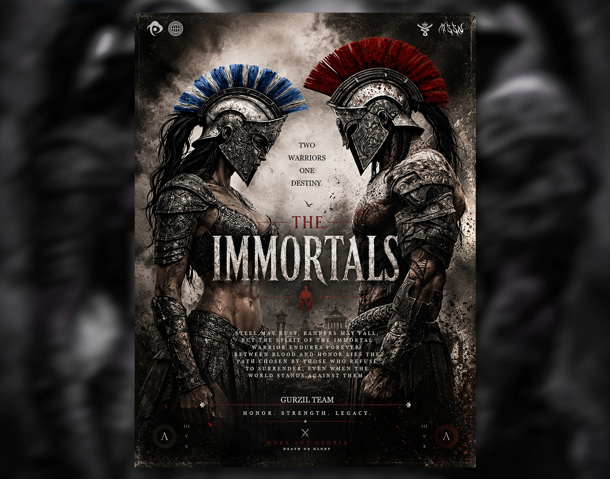
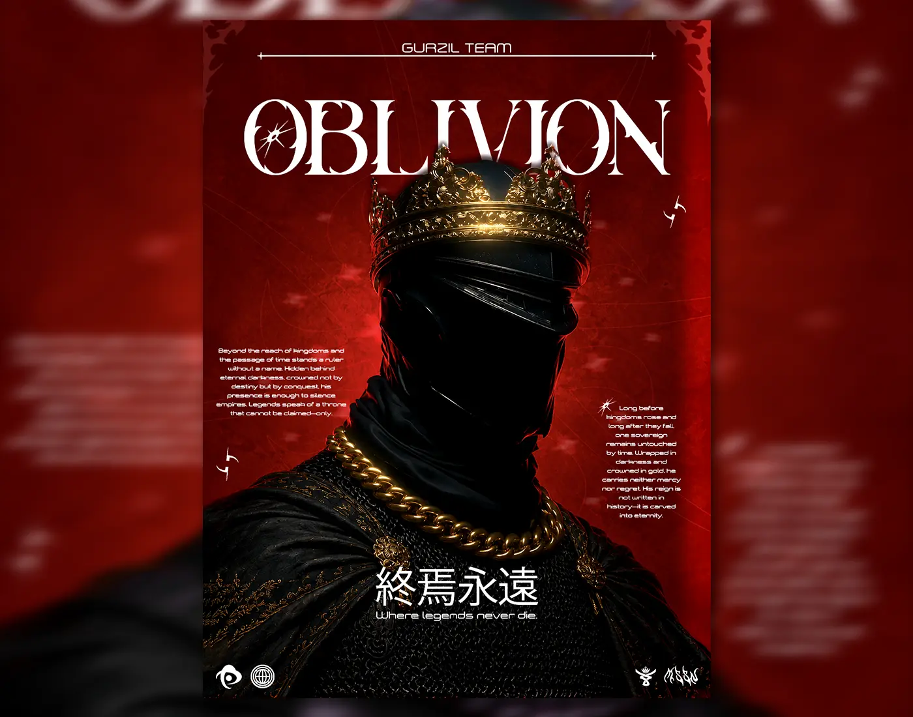
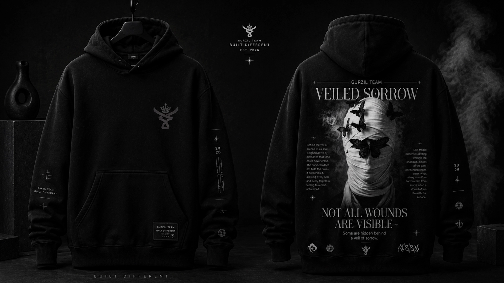
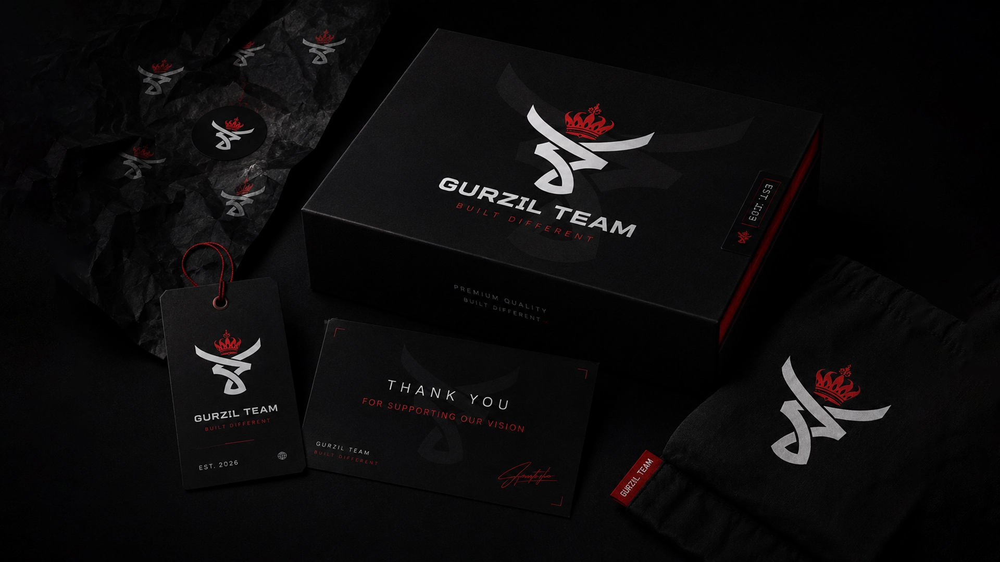
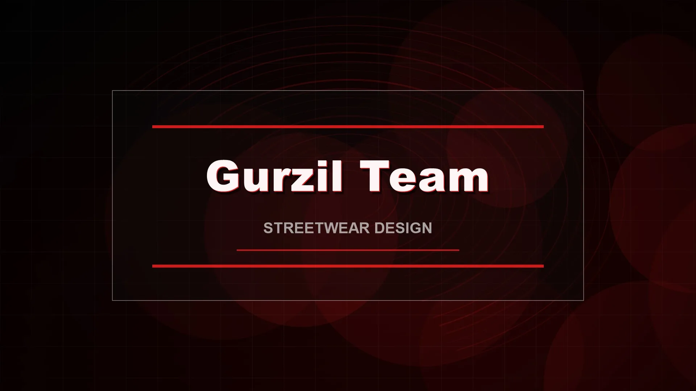
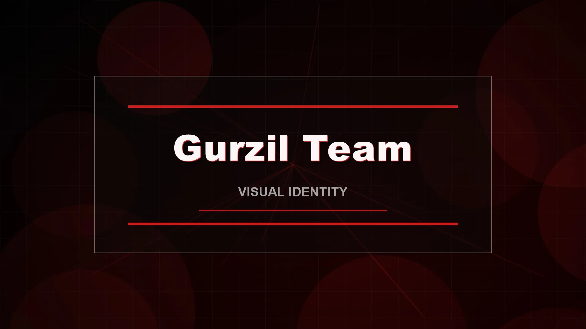

01 / Cinematic poster
Graphic designer / visual creative
Bold images, distinct identities, and cinematic ideas designed to leave a mark.
01 / The selection
Sixteen selected visual pieces, including two upcoming concepts. Cinematic stories, typography, character art, and brand explorations.




02 / Brand identity
Identity systems with a strong centre of gravity — from the logo through to the world around it.
Gurzil Team is a modern creative brand inspired by streetwear, gaming culture and bold visual identity.
See the system ↓



Independent identity
03 / Motion / Digital
A playable collection of animated visual studies. Press play and stay a while.
04 / The archive


05 / The designer
I’m MASSYNE, a visual thinker with a taste for the unexpected.
I create cinematic visuals, bold identities and polished digital artwork for brands, gaming culture and visual stories. My work brings together dark aesthetics, strong composition and a sharp eye for detail.
06 / The next chapter